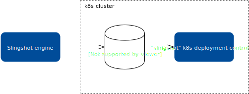

-- heading # Slinsghot and K8s: thinking the future -- # Current state of k8s deployments in Slingshot - We wrap k8s resources in a proprietary-ish Slingshot YAML (`Deployment`, `Service`, `DaemonSet`) - We create some other resources behind the scenes (namespace, `Ingress`, `HorizontalPodAutoscaler`...) -- A slingshot.yml ``` serviceType: kubernetes clusterName: qps deploymentSpec: # something that looks like a Deployment resource serviceSpec: # something that looks like a Service resource horizontalPodAutoscalerSpec: # something that looks like a HPA resource ``` -- ## Limitations for users - Limited to the **types of k8s resources** that Slingshot exposes - Limited to the **fields** of those resources that Slingshot understands and validates - Users have to learn a **proprietary syntax**. We have to document it. _We are not awesome at that_. - It reduces the features in the platform developers can use -- ## K8s resources and features we don't expose - `ConfigMap`, `Secret`, `StatefulSet`, `Job`, `CronJob`, `Endpoints`, `PersistentVolume`... - Headless services - Any "Custom Resource Definition" provided by any extension installed in the cluster. These can be managed via `kubectl` but not with Slingshot. -- ## A slight detour into infrastructure deployments Slingshot infrastructure deployments work quite differently. - We don't attempt to wrap CloudFormation - We embrace the platform's _native syntax_ - Slingshots gives users additional features (parameters, multi-stack, multi-region, rollouts...) - An external service deploys the infrastructure -- ## Why do IaC deployments work well - Cloudformation is well documented, there is expertise in the market. - You can even ask questions on Stack Overflow. - Anything you can do with cloudformation, you can use via Slingshot - Slingshot acts as a higher lever orchestration -- ## Can we make k8s deployments more like IaC deployments? I think we can: - Use kubernetes resources natively - Have an agent in the kubernetes cluster take care of the blue/green deployment - Slingshot does the additional orchestration, pipelines, regions, clusters... --  -- How this might look like: ``` version: '2' serviceName: kube-ng serviceType: kubernetes resources: - uri: "file:///k8s/services.yml" - uri: "file:///k8s/custom-resources.yml" ``` -- ## What if we want to isolate users from the internal details of k8s? First we should ask ourselves whether it's really helpful to isolate users from the complexity or details of a kubernetes deployment. <br> If we think there is value, there are other ways: we can make higher-level resource specification an external extension to Slingshot -- <img src="img/slingshot-k8s-ng.svg" style="width:70vw; display: block; margin: 0px auto;"/> -- ## Questions?